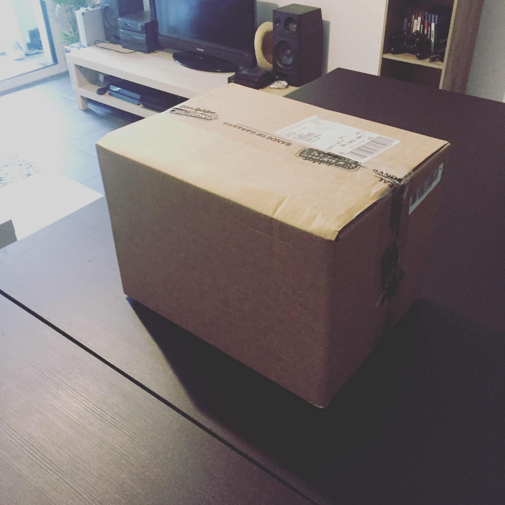
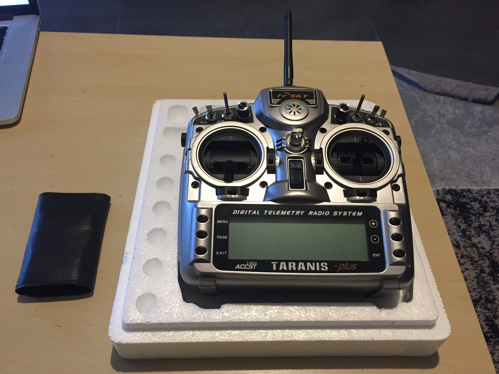

[Unboxing] Ma nouvelle télécommande (Frsky XD9 PLUS)
Bonjour à toutes et à tous, si vous m’avez suivie sur les réseaux sociaux vous savez que j’ai reçu un colis ce samedi. Mais qu’est-ce que cela peut bien être ?

Nouvelle radio
Et oui dans le colis, il y’avait bien une nouvelle radiocommande. Il était temps de se mettre à la page avec deux veilles radio en 41 MHz, dont une en panne.
Il devenait difficile de voler, j’ai repris la pratique depuis peu et le fait de devoir rerégler à chaque fois la radio quand je changeais de modèle devenait problématique.
Après quelques recherches pour trouver la nouvelle heureuse élue, je me suis penché sur la marque Frsky. Certains la trouvent difficile à programmer, mais ça ne me fait pas peur. D’ailleurs, je vous partagerai des articles pour pouvoir programmer et utiliser la radio. Donc si vous souhaitez des tutoriels, n’hésitez pas à m’en faire part en commentaire. :)
Présentation de la Frsky XD9 PLUS

La Taranis est une radiocommande très utilisée dans le drone FPV et dans l’aéromodélisme, ce qui fait que l’on retrouve une grande communauté (Idéal pour trouver des solutions à nos problèmes).
Le seul inconvénient c’est l’absence de manuel en français, mais en cherchant un peu on trouve facilement des tutoriels et les menus de la radio sont très bien faits.
Ses caractéristiques
Les voies
La radio possède 16 voies toutes paramétrables :
- 2 manches avec trim associé
- 2 potentiomètres : S1 et S2
- 2 curseurs latéraux : LS et RS
- 6 interrupteurs 3 positions (SA-SE, SG)
- 1 interrupteur 2 positions (SF)
- 1 interrupteur momentané (SH)
Autres caractéristiques
- Écran LCD rétroéclairé 212x64 mm
- Tous les manches, curseurs, potentiomètres et interrupteurs peuvent être affectés librement
- 60 mémoires de modèles
- Module HF interne avec télémétrie capable de transmettre jusqu’à 16 voies avec un taux de rafraîchissement de 9 ms
- 3 écrans pour l’affichage de la télémesure personnalisable, data log (nécessite une carte micro SD)
- 64 mixages
- 9 modes de vol
- Émetteur multimode (1-4)
- Compatible télémétrie « Smart Port »
- 16 courbes personnalisables de 3 à 17 points
- Prise écolage de standard JR (jack) capable de recevoir jusqu’à 8 voies et d’envoyer jusqu’à 16 voies.
- Prise jack audio pour brancher un casque (annonce vocale de télémesure)
- Prise mini USB pour connecter l’émetteur au PC (non fourni)
- Multi langue dont le français : l’émetteur est d’origine en anglais, mais vous pouvez le reflashé avec la langue de votre choix
- Firmware open source : https://www.open-tx.org
Contenue de la boîte
Lors que vous allez commander votre radio, vous avez le choix entre plusieurs lots :
- Lot basique comprend :
- 1 émetteur Taranis X9D PLUS
- 1 chargeur secteur
- Une sangle de cou
- 1 accu NiMh 7.2V 2000mAh
- Lot avec récepteur :
- 1 émetteur Taranis X9D PLUS
- 1 chargeur secteur
- 1 sangle de cou
- 1 accu NiMh 7.2V 2000mAh
- 1 récepteur RX XSR ou X8R
- Lot avec mallette en alu
- 1 émetteur Taranis X9D PLUS
- 1 chargeur secteur
- 1 sangle de cou
- 1 accu NiMh 7.2V 2000mAh
- 1 récepteur RX XSR ou X8R
- 1 mallette de rangement alu
Fréquences
La radio fonctionne en 2,4 GHz et dispose de plusieurs modes de transmission par défaut le D16 et le LTB. Ce sont les modes eu pour les habitants en Europe.
Cependant certain récepteur de la marque fonctionnent en D8 comme le DR4-II très utilisé en FPV.
En reprogrammant la radiocommande avec un ordinateur vous pourrez réactiver ce mode. Je sortirais un article pour ceux qui le souhaitent.
Questions ?
Comme d’habitude, si vous avez des questions n’hésitez pas à mettre un commentaire ou m’envoyer un message sur la page Facebook disponible en cliquant ici.